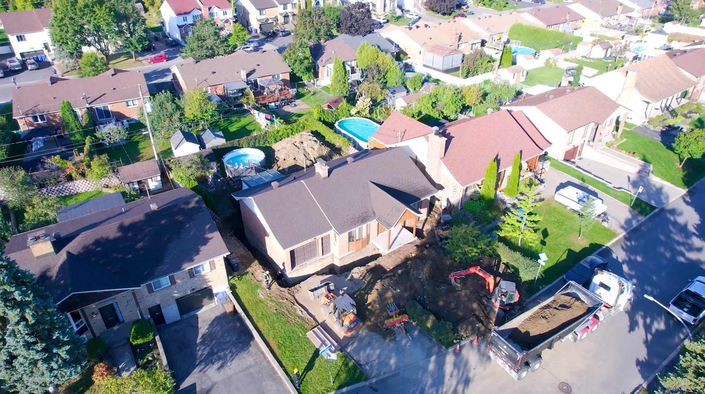

Vidéo par drone et montage
Captation aérienne et montage vidéo professionnel pour les sites web, les médias sociaux et les communications d’entreprise.
Zone desservie
Vision Altitude réalise à Laval des captations vidéo par drone, du montage vidéo professionnel, de la photographie aérienne et du suivi de chantier. Les images sont préparées selon les besoins des entreprises, des immeubles et des projets locaux.
Entreprises locales
Laval regroupe une grande variété de sites : axes commerciaux, concessionnaires, bâtiments industriels, entrepôts, terrains, immeubles de bureaux et projets immobiliers. La captation par drone permet de montrer l’emplacement, les accès, les stationnements et l’environnement immédiat d’un lieu.
Une vidéo par drone avec montage professionnel peut présenter les opérations d’une entreprise, ses installations ou un chantier dans un contenu clair et dynamique. La photographie aérienne peut aussi soutenir une présentation d’entreprise, une annonce immobilière ou la mise en valeur d’un bâtiment existant.
Les livrables sont choisis selon vos objectifs : présenter, promouvoir ou documenter.
Captation aérienne et montage vidéo professionnel pour les sites web, les médias sociaux et les communications d’entreprise.
Des photos haute résolution pour montrer un bâtiment, un terrain, ses accès et son environnement. Consultez le service de photographie aérienne.
Captations ponctuelles ou planifiées pour documenter l’évolution des travaux. Découvrez le suivi de chantier par drone.
Réalisation à Laval
Vision Altitude a réalisé une captation vidéo professionnelle des travaux d’Excavation Chanthier à Laval. Les images aériennes du chantier et des opérations ont servi à produire une vidéo commerciale montée pour présenter l’entreprise et son travail sur le terrain.
La captation s’est déroulée sur trois journées avec un DJI Air 2S, pour environ quatre à cinq heures de tournage au total.

Une vidéo commerciale par drone réalisée à Laval, livrée avec et sans le logo de l’entreprise.
Voir l’étude de casConcessionnaires, entrepôts, bâtiments commerciaux, installations industrielles, immeubles de bureaux, propriétés résidentielles avec terrain, commerces et projets en développement peuvent profiter d’une vue aérienne bien préparée.
Pour des besoins connexes, consultez les pages immobilier, bâtiments commerciaux et industriel.
Une approche simple, de la planification à la livraison.
On précise le bâtiment, l’usage des images, les zones à couvrir et les contraintes du site.
Le vol est planifié selon la météo, la lumière et la sécurité autour du lieu.
Les séquences sont montées et les photos sont préparées dans des formats adaptés à vos communications.
Points à savoir pour planifier une captation à Laval.
Oui. Vision Altitude dessert Laval pour la vidéo par drone, le montage vidéo professionnel, la photographie aérienne et le suivi de chantier.
La vidéo par drone convient notamment aux entreprises, aux chantiers, aux immeubles commerciaux, aux terrains et aux installations industrielles qui souhaitent présenter un lieu, des opérations ou des travaux.
Oui. Selon le mandat, Vision Altitude peut réaliser le montage des séquences captées par drone et préparer une vidéo adaptée à vos communications.
Oui. Les conditions de déplacement, les frais éventuels et les détails du mandat sont confirmés avant la captation.
Recevez une soumission selon votre bâtiment, votre secteur et les livrables souhaités.